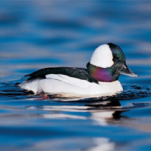

Canadian Ducks Collection

Female and male Wood duck
Wood ducks are a medium-sized perching duck. The breeding male has an iridescent green and white crested head, red eyes, red and white bill, chestnut breast, golden flanks and an iridescent back.

Bufflehead Duck
Adult male bufflehead has a white body, black back, and a dark head with a large white patch that wraps around the back of the head.

Green-Winged Teal Duck
The green-winged teal is North America's smallest dabbling duck. Males have a spotted pinkish breast, speckled grey sides and a grey back.

Tufted Duck
The Tufted Duck is a diving duck with a little flair; both male and female sport a stylish tassel of feathers at the back of the head.